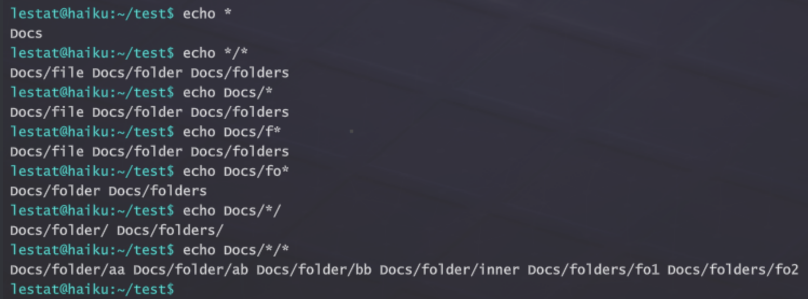
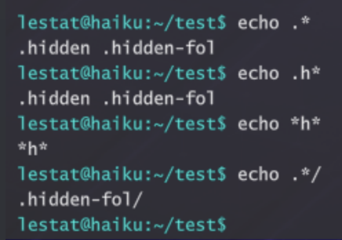

Haiku Commands¶
File System¶
cd¶
✅ Linux
cd
✅ Windows
cd
Change the directory
Parameters:
cd /
Go to root directory.
cd ..
Go up a directory (parent directory).
cd directory path
Navigate to specified directory.
Example:
cd docs/users
cd "my folder"
pwd/chdir¶
✅ Linux
pwd
✅ Windows
chdir
cat/type¶
✅ Linux
cat
✅ Windows
type
Short for "concatenate", this command displays file contents in the terminal.
Usage:
cat [option]... file...
Example:
cat myDocument.txt
cat "my document.txt" - quotes must be used when the filename contains a space.
cat file1 file2 file3
ls/dir¶
✅ Linux
ls
✅ Windows
dir
List all the current files and folders in the current working directory or a specified path.
Options:
-l
use a long listing format
-h, --human-readable
with -l, print file sizes like 1K, 234M, 2G, etc
-a, --all
do not ignore entries starting with .
Example:
ls
ls path
ls -lah path
ls -a -l path
rm/del¶
✅ Linux
rm
✅ Windows
del
Short for 'remove'. Deletes a file or directory.
Parameters
-r
Delete a directory and all its contents.
Usage:
rm -r directory name
rm file name
rm file…
Example:
rm -r myDirectory
rm myFile.txt
rm myFile.txt myfile2.txt
cp/copy¶
✅ Linux
cp
✅ Windows
copy
Copy a file or directory to another destination file or destination directory.
Usage:
cp source_file dest_file | dest_directory
cp -r source_directory target_directory
Example:
cp passwords.txt docs/myPasswords.txt
cp pass.txt pass2.txt
cp -r myFiles docs
cp "my password.txt" mypass.txt*
*Note if a file or path has spaces in the name it must be surrounded in quotes.
mv/move¶
✅ Linux
mv
✅ Windows
move
Move a file or folder to a new path location or change the name of a file or directory.
Usage: `mv file newfile`
e.g.
Changing a file name:
`mv file.txt newfile.txt`
Moving a file to a new location:
`mv file1.txt /home/user1`
Moving a directory
`mv /home/users/files/ /home/users/user1/files/
file¶
✅ Linux
file
❌ Windows
Used to determine file type. Multiple files can be passed to file at once including the * wildcard symbol to run against all files in the current directory.
Parameters
-z or -Z attempts to look inside an archive or compressed file, if successful returns file type and compression details
Usage
file "file_name"
file "file1" "file2" "file3"
file *
Examples
file myDocument.txt
file "my application.bin"
file *
Notes
Quotes must be used for filenames containing spaces. File does not look at the file extension to determine file type but instead looks at the actual file attributes to see what it is.
mkdir/md¶
✅ Linux
mkdir
✅ Windows
md
Short for 'make directory'. Makes the directory(ies) if they do not already exist.
Usage:
mkdir [option]... directory...
Example:
mkdir newDirectory1 newDirectory2
mkdir existingDirectory/newDirectory
mkdir -p hierarchy/of/new/directories
du/dust¶
✅ Linux
du/dust
❌ Windows
du is a gnu utility that measures disk usage of a single directory or file.
Inspired by the dust program (du written in rust), the app aggregates the size,
or disk usage, of all file system objects found underneath its entry point based
on our disk usage metrics.
disk usage metrics for different types of game files:
text files: the raw content of the file is read, every character counts as 1 byte of text, we pretend they are all UTF8 ASCII.
binary files: we hash the file name and generate a random number with that as a
seed, then use it to create a deterministic random disk usage between 1KB and 8KB.
zipped archives: it shows the archive as a single file which has a disk usage of
all of the files it contains (recursively, allowing for zip inception) reduced by 75%, which is more or less the average compression of real-world 7-zip
(nested zip files don't reduce it further).
wordlists: depending on the relative size of the passwords it's supposed to
contain, the wordlist size is either 100%, 40%, 27.5%, 17.5%, or 10% of the real-world rockyou wordlist, which has a storage size of 139 MB.
Usage:
dust [-d number] [folder]
-d Specify a custom depth to the recursive algorithm.
Example:
dust
dust my-folder/ -d 4
du
du my-folder/ -d 4
touch¶
✅ Linux
touch
❌ Windows
lsblk¶
✅ Linux
lsblk
❌ Windows
strings¶
✅ Linux
strings
✅ Windows
strings
Find the printable strings in an object or other binary file.
Usage:
strings [options] [file]
-n [number]
Specify the minimum string length where the number argument is a positive decimal integer. The default is 4.
Example:
strings -n 3 myFile.txt
realpath¶
✅ Linux
realpath
❌ Windows
Usage: realpath [OPTION]... FILE..."
Print the resolved absolute file name all but the last component must exist
-e, --canonicalize-existing all components of the path must exist
-m, --canonicalize-missing no path components need exist or be a directory
grep¶
✅ Linux
grep
❌ Windows
grep - print lines matching a pattern
grep [OPTIONS] PATTERN [FILE...]
grep [OPTIONS] [-e PATTERN | -f FILE] [FILE...]
grep searches the named input FILEs for lines containing a match to the given PATTERN.
Currently implemented characters:
^ matches the start of the line
$ matches the end of the line
. matches any character
* extends the match of the previous character to be none or any amount of them
abcde and every other text character matches itself
head/more¶
✅ Linux
head
✅ Windows
more
Shows first N lines of the text file.
Arguments: -n <number_of_lines> (optional, default value is 10).
Examples:
head /test.txt
head -n 5 /test.txt
tail¶
✅ Linux
tail
❌ Windows
Shows last N lines of the text file.
Arguments: -n <number_of_lines> (optional, default value is 10).
Examples:
tail /test.txt
tail -n 5 /test.txt
less¶
✅ Linux
less
❌ Windows
Shows a file content page by page, where the page length is 15 lines.
Example:
less <filename.txt>
Control Keys:
Close the file: Ctrl+C
Go to the next page: Space or Enter (return)
Go to the previous page: Up arrow
Arguments:
-N - line numbering
Network/Hacking¶
ping¶
✅ Linux
ping
✅ Windows
ping
Transmits and receives Internet Control Message Protocol (ICMP) packets, issuing a statistical summary on cancellation (press CTRL+C).
Statistical Summary:
* Packet loss
* Avg/Min/Max/Standard Deviation of message response time
Usage:
ping hostname/IP
Example:
ping gcorp.com
ping 192.168.1.2
curl¶
✅ Linux
curl
✅ Windows
curl
Transfer data from a URL. Returns data as a string in the terminal.
Usage:
curl [options] [URL]
Example:
curl gcorp.com
curl http://gcorp.com
-O
Download file to current directory.
Example:
curl -O http://gcorp.com
nmap¶
✅ Linux
nmap
✅ Windows
nmap
Scans a device or hostname for ports. You can add parameters to change how the tool discovers the ports, and what information it will return.
Parameters:
-sV
Attempts to discover the software version a service is running.
-Pn
Skip host discovery (no ping). Nmap will ping a range of IPs, a method called ping sweeps, to determine what devices are active; this is the “host discovery” phase, and it is initiated first. Some firewalls might prevent ping sweeps; the -Pn parameter will tell Nmap to skip the host discovery phase and treat all IPs as active.
-O
Attempts to discover the operating system a service is running on.
-p
Only scan specified ports. Nmap -p port numbers hostname/IP
Port States:
open
Port is both accessible and accepting connections.
closed
Port is accessible, but no device is actively listening on it.
filtered
The port filters packets, likely from a firewall, or router rules. SMTP (Simple Mail Transfer Protocol), or a mail server, are usually filtered, as accessing them might require credentials or whitelisted IPs.
Example:
Nmap -sV -O -Pn -p 22 hostname.com
ssh¶
✅ Linux
ssh
✅ Windows
ssh
Remotely tunnel into a machine. A username of the target machine and its password are required.
Usage:
ssh [-p [port]] [[user@]host]
Example:
ssh -p 22 topdog@gcorp.com
ssh topdog@gcorp.com
ssh topdog@192.168.1.2
ssh gcorp.com -p 22
scp¶
✅ Linux
scp
❌ Windows
Copy the specified file or directory to a target directory on another machine.
Usage:
scp [source file] [target computer’s username]@[target system’s IP]/[target directory]/
scp source file target computer’s username@target system’s IP/target directory
Example:
scp passwordfile root@192.168.1.2/docs/stolenContent
hydra¶
✅ Linux
hydra
✅ Windows
hydra
A very fast network logon brute-forcer, supporting multiple service protocols. Currently World of Haiku only supports SSH brute forcing.
Usage:
hydra [[ [-l USERNAME | -L /path/to/username_file] [-p password | -P /path/to/pass_FILE ] ]] service
Parameters:
-l
Provide a specific single username to use
Example - hydra 10.1.2.4 -l admin
-L
Provide a file path to a username wordlist
Example - hydra 10.1.2.4 -L /home/userlist.txt
-p
Provide a specific single password to use
Example - hydra 10.1.2.4 -l admin -p password
-P
Provide a file path to a password wordlist
Example - hydra 10.1.2.4 -l admin -P /home/passlist.txt
service
non-optional service input to hydra. Must be used to tell hydra what service protocol we are brute forcing against.
Example - we’re brute forcing against ssh on the standard port of 22
hydra 10.1.6.3 -l admin -p pass ssh
Examples:
hydra ssh://192.168.1.1 -L /path/to/users.txt -P /path/to/pass.txt
hydra 10.1.2.4 -l root -P path/to/pass.txt ssh
dirb¶
✅ Linux
dirb
✅ Windows
dirb
DIRB is a Web Content Scanner. It looks for
existing (and/or hidden) Web Objects. It works by
launching a dictionary-based attack against a web
server and analyzing the response.
Synopsis:
dirb <url_base> <url_base> [<wordlist_file(s)>] [options]
Parameters:
-v
Show Also Not Existent Pages.
-x <extensions_file>
Amplify search with the extensions on this file.
-X <extensions>
Amplify search with this extensions.
sqlmap¶
✅ Linux
sqlmap
✅ Windows
sqlmap
Usage:sqlmap [options]
Options:
-h Show help message and exit
--version Show program's version number and exit
Target:
At least one of these options has to be provided to define the
target(s)
-u URL Target URL (e.g. ""http://www.site.com/vuln.php?id=1"")
-d DIRECT Connection string for direct database connection
Example:
""S=IP/HostName;DB=DBName;CR=UserName:password""
-c CONFIGFILE Load command parameters from file
Request:
These options can be used to specify how to connect to the target URL
--cookie=COOKIE HTTP Cookie header value (e.g. ""PHPSESSID=a8d127e..;SOME=fd32k"")
--auth-cred=AUTH.. HTTP authentication credentials (name:password name:password)
Enumeration:
These options can be used to enumerate the back-end database management system information, structure and data contained in the tables
-a, --all Retrieve everything
--current-user Retrieve DBMS current user
--current-db Retrieve DBMS current database
--hostname Retrieve DBMS server hostname
--users Enumerate DBMS users
--passwords Enumerate DBMS users password hashes
--dbs Enumerate DBMS databases
--tables Enumerate DBMS database tables
--columns Enumerate DBMS database table columns
--dump Dump DBMS database table entries
--search Search column(s), table(s) and/or database name(s)
-D DB DBMS database to enumerate
-T TBL DBMS database table(s) to enumerate
-C COL DBMS database table column(s) to enumerate
tshark¶
✅ Linux
tshark
✅ Windows
tshark
Network protocol analyzer and packet capture tool (terminal-based Wireshark).
Parameters:
-i
Network interface to capture on (default: eth0).
-w
Write captured packets to a dump file.
-r
Read packets from a dump file.
-z
Display the contents of a TCP stream between two nodes.
Capture is stopped by pressing Ctrl+C.
Usage:
tshark [-i interface] [-w file] [-r file] [-z]
Example:
tshark
tshark -i eth0
tshark -r /tmp/capture.pcapng
tshark -r /tmp/capture.pcapng -z
iptables¶
✅ Linux
iptables
❌ Windows
The Linux firewall command performing IPv4 packet filtering and NAT rules. Used to set up, maintain, and inspect the IP packet filter rules on a Linux computer.
Firewall rules contain either built-in or user-defined chains, a list of firewall rules specifying what to do with a packet that matches a given criteria. If the packet does not match the criteria, the next rule in the chain is examined; if it does match, the action taken on the packet can be either:
ACCEPT - let the packet through
DROP - block processing of packet
Three default Firewall Chains:
INPUT
OUTPUT
FORWARD
The order of firewall rules matters in that as
Parameters:
-L
List all the iptables rules.
-L [Chain]
optional to filter on a specific chain.
-A [CHAIN_name]
add a firewall rule to a specific chain (INPUT, OUTPUT, FORWARD)
-s [IP Address]
add a specific ip address to block for the chain rule.
iptables -A INPUT -s 22.22.22.22
-j [ACTION]
DROP or ACCEPT
iptables -A INPUT -s 22.22.22.22 -j DROP
aircrack¶
✅ Linux
aircrack
❌ Windows
aircrack-ng is a 802.11 WEP / WPA-PSK key cracker. It implements the so-called Fluhrer - Mantin - Shamir (FMS) attack, along with some new attacks by a talented hacker named KoreK.
usage: aircrack-ng [options] <input file(s)>
WEP and WPA-PSK cracking options:
-w <words> : path to wordlist filename
Other options:
--help : Displays this usage screen
aireplay¶
✅ Linux
aireplay
❌ Windows
aireplay-ng is used to inject frames.
usage: aireplay-ng <options> <replay interface>
Replay options:
-a bssid : set Access Point MAC address
-c dmac : set Destination MAC address
Attack modes (numbers can still be used):
--deauth count : deauthenticate station (-0)
--help : Displays this usage screen
airodump¶
✅ Linux
airodump
❌ Windows
airodump-ng is a packet capture tool for aircrack-ng. It allows dumping packets directly from WLAN interface and saving them to a pcap or IVs file.
usage: airodump-ng <options> <interface>
Options:
--write <prefix> : Dump file prefix
-w : Same as --write
--endwrite : Stop write dump file
-e : Same as --endwrite
Filter options:
--bssid <bssid> : Filter APs by BSSID
-d <bssid> : Same as --bssid
--essid <essid> : Filter APs by ESSID
-a : Filter clients
By default, airodump-ng hops on 2.4GHz channels.
You can make it capture on other/specific channel(s)
by using:
--channel <channels> : Capture on specific channels
-c <channels> : Same as --channel
--help : Displays this usage screen
nmcli¶
✅ Linux
nmcli
❌ Windows
Can connect to and disconnect from WiFi networks
Usage:
nmcli OBJECT { COMMAND }
device : Device object (dev or d)
connection : Connections object (con or c)
Device object
Use for device configuration
List available WiFi access points:
wifi list
Establish connection with access point:
wifi connect network-ssid [password " + "\"network-password\"]"+
@"
password is optional
Connection object
Disconnect:
nmcli c/con/connection down
Local/Hacking¶
ifconfig/ipconfig¶
✅ Linux
ifconfig
✅ Windows
ipconfig
Description:
Display and manage network interface configurations. Sho
ws the user the IP address, subnet mask, gateway(router)
ip address and mac address.
Example:
ifconfig
To enable or disable network interfaces by name, use:
ifconfig <interface_name> up
ifconfig <interface_name> down
Example:
ifconfig eth0 up
iwconfig¶
✅ Linux
iwconfig
❌ Windows
netstat¶
✅ Linux
netstat
✅ Windows
netstat
Provides information about network interfaces, connections, listening ports, and network usage statistics. When used in defense, it identifies ports that are open and listening or network connections that have been established which might represent suspicious activity.";
john¶
✅ Linux
john
✅ Windows
john
Crack passwords using wordlists.
The most basic operation of John The Ripper is called single crack mode; it takes information from the files and applies mangling rules to them.
Usage:
john file name
john --wordlist=myWordlist.lst myHash.txt
Example:
john myHash.txt
ps/tasklist¶
✅ Linux
ps
✅ Windows
tasklist
sudo¶
✅ Linux
sudo
❌ Windows
kill¶
✅ Linux
kill
✅ Windows
taskkill
kill: kill [sig] [pid | name]
Ends a process by sending it a signal.The default signal is SIGTERM (-15) (ask politely for program termination). There's also SIGKILL (-9) (force program termination)
telnet¶
✅ Linux
telnet
✅ Windows
telnet
Usage: telnet[OPTION...][HOST[PORT]]
Login to remote system HOST(optionally, on service port PORT)
General options:
-l, --user attempt automatic login as USER
Other options:
-?, --help, or no options give this help list
Utility¶
whoami¶
✅ Linux
whoami
✅ Windows
whoami
Whoami literally means 'Who am I?' This command returns the username of the current user.
Example:
whoami
dd¶
✅ Linux
dd
❌ Windows
dd
Creates and restores dumps of hard drive devices.
**To create the dump:**
*dd if=DEVICE_NAME of=/PATH_TO_NEW_DUMP*
Example:
*dd if=/dev/sdd of=/dump.dd*
Arguments:
*conv=noerror* - ignore read errors during the dump creation.
*-b* copy the dump to the system copy buffer (for mission development purposes).
*bs=* block size (example: 1M for 1 megabyte).
**To restore the dump:**
*dd if=/PATH_TO_DUMP of=DEVICE_NAME*
Example:
*dd if=/dump.dd of=/dev/sdd*
unzip¶
✅ Linux
unzip
❌ Windows
List and extract compressed files in a ZIP archive
*unzip* will list or extract files from a ZIP archive, commonly found on MS-DOS systems. The default behavior (with no options) is to extract all files from the specified ZIP archive into the current directory (and subdirectories below it). A companion program, **zip**, creates ZIP archives.
Options
-l
list archive files (short format).
-d
unzip archive to given directory. If directory doesn't exist, unzip will create it.
Examples
unzip -d archive archive.zip
unzip /Documents/Archive.zip
clear¶
✅ Linux
clear
✅ Windows
cls
exit¶
✅ Linux
exit
✅ Windows
exit
echo¶
✅ Linux
echo
✅ Windows
echo
Displays a string given as an argument. echo hello world will output “hello world” in the terminal. Instead of displaying the given string in the terminal, echo can write it to a file.
Usage:
echo response
echo file content > file name
Example:
echo hello world
echo hello world > helloWorld.txt
md5sum/certutil¶
✅ Linux
md5sum
✅ Windows
certutil
Compute and check MD5 message digest
Usage:
md5sum file...
Example:
md5sum password.txt
md5sum p1.lst p2.lst p3.lst
man/ /?¶
✅ Linux
man
✅ Windows
/?
Short for “manual,” it displays the help content for an installed command or
tool.
Usage:
man [command/tool]
Example:
man ping
cowsay¶
✅ Linux
cowsay
❌ Windows
cowsay/cowthink - configurable speaking/thinking cow
(and a bit more)
cowsay [-h] [-l] [-bdgpstwy] [-f cowfile]
[-e eye_string] [-T tongue_string] [-W columns]
There are several provided modes which change the
appearance of the cow depending on its particular
emotional/physical state. The -b option initiates Borg
mode; -d causes the cow to appear dead; -g invokes
greedy mode; -p causes a state of paranoia to come over
the cow; -s makes the cow appear thoroughly stoned; -t
yields a tired cow; -w is somewhat the opposite of
-t, and initiates wired mode; -y brings on the cow's
youthful appearance.
The user may specify the -e option to select the
appearance of the cow's eyes, in which case the first
one or two characters of the argument string eye_string
will be used. The default eyes are 'oo'. The tongue is
similarly configurable through -T and tongue_string;
the tongue does not appear by default.
However, it does appear in the 'dead' and 'stoned'
modes. Any configuration done by -e and -T will be lost
if one of the provided modes is used.
The -f option specifies a particular cow character to
be used instead of the default cow.
To list all available cowfile characters on the current
machine, invoke cowsay with the -l switch.
movewindow¶
✅ Linux
movewindow
✅ Windows
movewindow
Moves a game window to a normalized screen position. Coordinates should be in the 0..1 range.
Usage:
movewindow windowName x y [pivotX pivotY]
Example:
movewindow terminal 0.5 0.5
movewindow terminal 0.25 0.75 0.0 1.0
focuswindow¶
✅ Linux
focuswindow
✅ Windows
focuswindow
Brings a specified game window to the front.
Usage:
focuswindow windowName
Example:
focuswindow terminal
Scripting¶
mini¶
✅ Linux
mini
✅ Windows
mini
Miniscript is a simple scripting language added into the game for players to build their scripts and exploits.
Scripting documentation: see Miniscript Anvil Scripting Language page
Usage:
mini [file]
Miniscript Anvil Scripting Language
World of Haiku¶
zion flag flags ./loic ./roninnitro map goals
flag
Capture the flag (singular) for dojo missions. Input without parameters is for flagged files. Example:
flag flag_file_name.ext
Parameters
-sV
Capture the service version. Use quotes if the version contains whitespaces. Example:
flag -sV ""1.0.2 LTS""
-u
Capture the user name of device. Use quotes if the user name contains whitespaces. Example:
flag -u ""john_nichols_96""
-oV
Capture the operating system version. Use quotes if version contains whitespaces. Example:
flag -oV ""22.04 LTS""
-sL
Capture the services list. Use quotes if service name contains whitespaces. Divide services name by whitespaces. Example:
flag -sL ""TFTP"" SSH ""DHCP""
-rS
Capture the random String flag. Use quotes if the string contains whitespaces. Example:
flag -rS ""Hello world""
flag -rS MyFlag
flags
Display all mission goals/flags as a checklist with completion status. In multiplayer shared-goals mode, a shared goals header is displayed.
Usage:
flags
Example:
flags
User Windows Openers¶
explorer editor [file] browser [URL] nitro notes manual tracing tracing
Opens the Packet Tracing application. Optionally accepts a file path to open directly in the packet tracer.
Usage:
tracing [file]
Example:
tracing
tracing /tmp/capture.pcapng
terminalSize
Sets or closes the game terminal. Arguments: 0 - panel view (default), 1 - maximized view, 2 - hidden view. If the terminal is closed (hidden) and the method is invoked with a 0 or 1 argument - the terminal will be open.
Usage:
terminalSize [0 | 1 | 2]
Aliases¶
| Alias | Command |
|---|---|
| ll | ls -l |
| dir | ls |
| cls | clear |
| printf | echo |
| du | dust |
| logout | exit |
| killall | kill -15 -1 |
| nautilus | explorer |
| thunar | explorer |
| ed | editor |
| vi | editor |
| vim | editor |
| emacs | editor |
| nano | editor |
| code | editor |
| notepad | editor |
| cowthink | cowsay |
Terminal Behavior¶
Pattern Matching¶
txt matches a file named "txt"
* matches anything or even nothing
*txt matches anything followed by "txt" (ends with "txt")
file* matches "file," followed by anything (needs to start with "file")
*some* matches anything, followed by "some", Followed by anything (needs 'some' somewhere in the middle)
? matches a single character (needs a character, any character)
j? matches something that starts with "j" and is followed by any character
*.?s would then match both "index.js", "main.rs", ".ps", but wouldn't match "gui.jsx"
[abc] matches anything that has one character and it is either a, b or c
*.[jr]s would match anything that ends with ".js" or ".rs"
[a-z] matches a single character, from ASCII "a" to "z" (can include weird characters of ASCII there)
file[0-9] then would match anything that starts with "file" and is followed by a single-digit
file[ab0-9cd] matches "file" followed by a single digit or either a, b, c, d
[!s] or [^s] a '!' or '^' at the start of the brackets negates all inside, so here it matches all except for "s"
*[!s] would then match "anything that does not end in an "s"
Pathname Expansion¶
Pattern matching is used for pathname expansion, which expands parts of the path using pattern matching to look for files by their path; this allows for supplying complex hierarchies of directories to a command.
Each part of the path generates a machine that tries matching.
For instance, > echo */Do*/Fo* will make a machine of *, then match, then make a machine Do*, match again, and so on.
If any machines fail, there is no need to go further, and no more machines will be built. The input won't be expanded at all. In this example, it will remain literally echo.
Hidden files must be matched explicitly by prepending any of the patterns with a dot, for example: *. Regular * does not grab them.
EXAMPLE
mkdir test
cd test
mkdir -p .hidden-fol/../Docs/folder/inner/../../folders/fo{1,2}
touch .hidden .hidden-fol/inner Docs/folder/{aa,ab,bb,inner/cc} Docs/file


Brace Expansion¶
Brace expansion generates multiple text strings from a pattern containing braces. Items inside curly braces are separated by commas.
echo {a,b,c}
expands to: echo a b c
mkdir dir{1,2,3}
expands to: mkdir dir1 dir2 dir3
touch file_{alpha,beta,gamma}.txt
expands to: touch file_alpha.txt file_beta.txt file_gamma.txt
mkdir -p .hidden-fol/../Docs/folder/inner/../../folders/fo{1,2}
expands to two paths: folders/fo1 and folders/fo2
Parameter Expansion¶
The shell expands $VARIABLE by substituting its value. This works in unquoted and double-quoted contexts. Available environment variables:
$PWD - current working directory path
$OLDPWD - previous working directory path
$COLUMNS - terminal column width
$? - exit status of the last command (0 = success)
Example:
echo $PWD
echo "Current dir: $PWD"
echo $?
Output Redirection¶
You can redirect the output of any command to a file using > (overwrite) or >> (append).
> overwrites the file (creates it if it doesn't exist)
>> appends to the file (creates it if it doesn't exist)
Example:
echo hello > greeting.txt
echo world >> greeting.txt
ls > filelist.txt
Quoting¶
These are three of the most well-known forms of quoting.
- Backslash quoting
- Escapes the next character after a unquoted
\, for instance,\$vartranslates literally to$var,making$lose its meaning
- Escapes the next character after a unquoted
- Single quoting
- Escapes every character inside of
'..', including backslashes
- Escapes every character inside of
-
Double quoting
- Escapes every character inside of
"..", with the exception of$,``,` and"
It makes so characters inside double quotes are not word split, this is useful when we want to read a multi-word variable without breaking it into different arguments.
Example
> echo "$PWD"won't split the result of $PWD variable if there's a space in the path,> echo $PWDwill - Escapes every character inside of